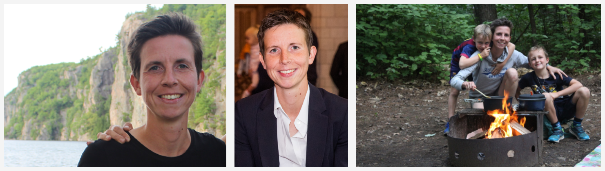
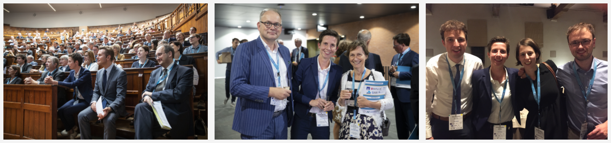

Mathematician by training I work in actuarial science. I am interested in data science, statistical and machine learning with a particular focus on insurance problems. My research projects are data driven, and find direct inspiration in collaborations with insurance companies or pension funds. The challenges raised by these insurance problems naturally create spill-over effects to other fields and to more methodological contributions.
I combine a professor position at KU Leuven (in the Research Centre Insurance) with a part-time position as professor in actuarial data science at University of Amsterdam (with the Amsterdam School of Economics, section of Quantitative Economics). I am co-founder and co-director of LRisk, the Leuven Center for Insurance and Financial Risk Analysis. Since January 2022 I serve as co-director of the Research Centre for Longevity Risk at the University of Amsterdam.
I love teaching and have extensive experience with teaching at all levels of higher education, designing and coordinating courses for both small and large groups of students. Teaching abroad and creating in-company workshops related to my research agenda allow me to further expand my horizon. I serve as the program director of the MSc of Actuarial and Financial Engineering at KU Leuven. Currently, I am the campus Leuven vice-dean for education at the Faculty of Economics and Business (FEB) and the program director of the Business Economics programs. In the past, I also served as program director of FEB’s (non-core) master programs and as ombudsman for the PhD students.
With my former PhD student Roel Verbelen I run the DataCamp course on Valuation of Life Insurance Products in R.
